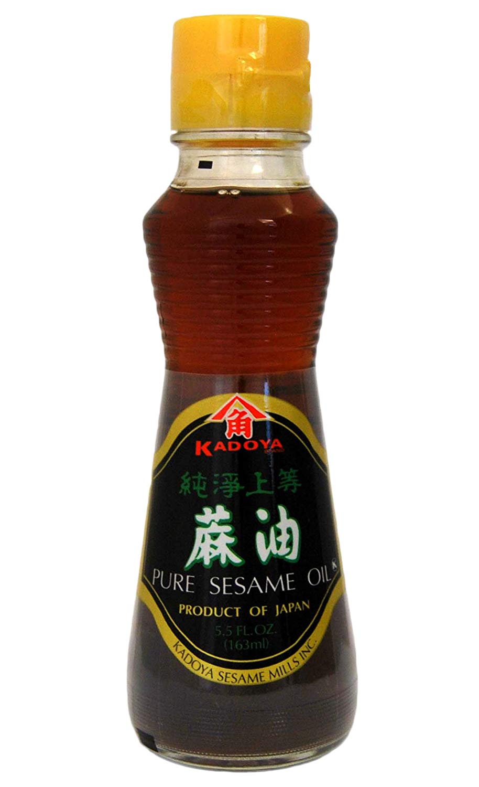

steamed buns
time for a round boy (soft)
dough parts:
- plain white flour
- sesame oil
- dry active yeast
- 1 tsp baking powder
- a pinch of salt and sugar
- finely chopped chinese (napa) cabbage
- spring onion
- finely chopped shiitake mushroom
- garlic
- ginger
- 5 spice
- shaoxing wine

- light soy sauce

- dark soy sauce

- finely chopped chinese (napa) cabbage
- spring onion
- finely chopped shiitake mushroom (optional)
- pork or beef mince
- garlic
- ginger
- shaoxing wine
- light soy sauce
- make the dough first. mix the ingredients in a bowl with warm water to form a soft, sticky dough. cover, and leave in a warm place to prove for at least an hour (if you're pressed for time, put the bowl into a larger bowl of warm water)
- put the chopped chinese leaf in a bowl with salt, scrunch it around a bit and leave for at least half an hour. you're trying to get as much water out as possible, as a wet mix is the enemy of a soft, fluffy bun. if there are tatty outer leaves, save them to line the steamer with instead of throwing them away! after leaving it, rinse to remove the salt and squeeze hard in a sieve or a teatowel. if you have to skip this step, use very finely chopped spring (collard) greens instead, as they're much less wet.
- mince the other ingredients you're using, and mix together, adding soy/salt to taste. if you're making the vegetarian version, it's worth frying everything off for 15 minutes or so, to concentrate the flavours and get rid of the moisture.
- turn out the dough on a floured surface, and divide it into bigger than table tennis sized balls that sit in the palm of your hand. pat these into a rough circle, not too big, and thicker in the centre than the edges it's really important not to make these too thin, as the underside will cook wet and doughy instead of light and fluffy.
- erring on the side of a bigger dough:filling ratio, spoon some mixture into the centre of the circle, cupping it in one hand. with the other, crimp the top edges together, moving around in a circle and gathering together the stretchy dough edge as you go. for the last 2 steps, this video should help.
- line a steamer with either chinese cabbage leaves or greaseproof paper (the first is a bit better, as they let the steam through well), and place the buns, giving them some space to expand. bring a pan of water to the boil that the steamer fits closely on.
- steam for 15-20 minutes on high heat, then take off the heat and leave to sit for at least another 10, during which time the dough will move from tacky-fluffy. don't take off the lid! (i know it's exciting)